基于复杂网络和SEIR传染病模型的COVID-19疫情发展仿真
参数说明
- p ：结点 i,j 结点代号
- θ：不注意活动接触到病毒人群流动意向y_i，该结点开放；0则封闭
- β：接触后感染率\mu治愈率
- η：转变为易感人群概率Adj_i结点 i 的邻接点集合
模型
Albert-László Barabási 和Réka Albert为了解释幂律的产生机制，提出了无标度网络模型（BA模型）。
可假设人与人间构成了 BA 网络，因为：
- 人类社会组织存在小世界性、无标度性；
- 个体间存在差异，结点的度服从幂律分布。
符号表如下。
| Notation | Description | Notation | Description |
|---|---|---|---|
| $p$ | 结点 | $i,j$ | 结点代号 |
| $\theta$ | 不注意活动接触到病毒人群流动意向 | $y_i$ | 1，该结点开放；0则封闭 |
| $\beta$ | 接触后感染率 | $\mu$ | 治愈率 |
| $\eta$ | 转变为易感人群概率 | $Adj_i$ | 结点 $i$ 的邻接点集合 |
对于每个结点，状态转移概率服从修正的 SEIR 模型：
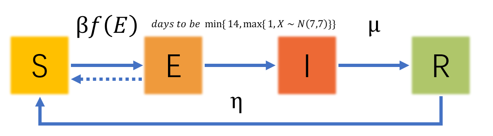
其中，对于结点 i，
$$
f_i(Adj_i)
$$
为
$$
f_i(Adj_i) = (1 - \prod_{j \in Adj_i \cap Latent}(1-\theta) y_j)y_i
$$
$$
Latent
$$
为潜伏期人群集合。
举例解释一下上述模型中的传染公式：
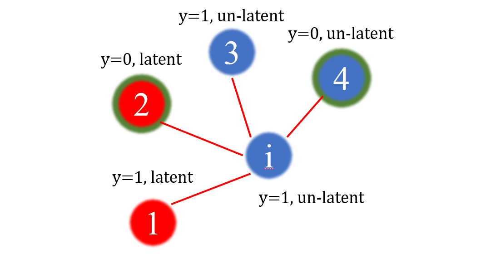
假设对于结点 i，其临界结点集合
$$
Adj_i = {1,2,3,4}
$$
，其中2、4结点是封闭的。
在每天中，如果 i 未封闭，则会与1、2、3、4中未封闭的点以概率 θ进行互动，如果互动，并且 j 处于潜伏期，则有 β 的概率使 i 染病。
从对立事件考虑 i 患病概率，则为：
$$
\beta (1 - \prod_{j \in Adj_i \cap not-seal \cap Latent}(1-\theta))
$$
在数学上表达是否封闭，则加入 y_j 变量，因此可定义每次迭代中，i 被感染的概率为：
$$
\beta f_i(Adj_i) = \beta (1 - \prod_{j \in Adj_i \cap Latent}(1-\theta) y_j)y_i
$$
import networkx as nx
import matplotlib.pyplot as plt
%matplotlib inline
import seaborn as sns
import pandas as pd
#进度条可视
from tqdm import trange
import numpy as np
import os
import sys
this_dir = os.getcwd()
# this_dir = osp.dirname(__file__)
print(this_dir)
path = os.path.join(this_dir)
sys.path.append(path)C:\Users\43790\python projects\《算法导论》\THE MODEL OF SEIR BASED NETWORKfrom family import *
# using ba network
def return_family_list(n=1000, m=5, seed=0):
#BA network
G = nx.random_graphs.barabasi_albert_graph(n, m, seed)
#regular network
#G = nx.random_graphs.random_regular_graph(节点的度,节点数)
#随机图
#G = nx.random_graphs.erdos_renyi_graph(节点数, 链接概率)
#WS小世界网络
#WS = nx.random_graphs.watts_strogatz_graph(节点数, 节点的度, 链接概率)
# generate fam_list
fam_list = list()
adj = list(G.edges())
for g in G:
fam = family(label=g)
fam_list.append(fam)
for g_1, g_2 in adj:
f_1 = fam_list[g_1]
f_2 = fam_list[g_2]
f_1.relate(f_2)
return fam_list, GPart1：节点流动概率对疫情传播程度的影响
关键参数 θ：节点流动概率
from calculator import *
def experiment_1_THETA(fam_list, THETAs, INFECT_INIT=30, days=10, runs=30):
cal = Calculator(fam_list)
states_each_experiment = list()
states_each_experiment = np.zeros((runs, THETAs.shape[0], days, len(fam_list)))
for r in range(runs):
for t in trange(len(THETAs)):
theta = THETAs[t]
# print("theta: " + str(theta))
paras.THETA = theta
cal.cls()
infects = []
while len(infects) < INFECT_INIT:
i = np.random.randint(0, len(fam_list))
infects.append(i)
for i in infects:
fam_list[i].state = 5
# cal.next_iter(days) returns [day:[state, state, state]]
each_experiment = np.array(cal.next_iter(days))
# each_experiment = [sum(data!=0) for data in each_experiment]
states_each_experiment[r, t] = states_each_experiment[r, t] + each_experiment
return states_each_experimentfam_list, G= return_family_list()# experiment 1.0
days = 120
THETAs = np.asarray([0.001, 0.004, 0.008, 0.01, 0.02, 0.03,0.04, 0.05,0.08, 0.1, 0.4, 0.8])
ex_0_data = experiment_1_THETA(fam_list, days=days, THETAs=THETAs)100%|██████████████████████████████████████████████████████████████████████████████████| 12/12 [00:06<00:00, 1.97it/s]
100%|██████████████████████████████████████████████████████████████████████████████████| 12/12 [00:06<00:00, 1.94it/s]
100%|██████████████████████████████████████████████████████████████████████████████████| 12/12 [00:06<00:00, 1.99it/s]
100%|██████████████████████████████████████████████████████████████████████████████████| 12/12 [00:06<00:00, 1.95it/s]
100%|██████████████████████████████████████████████████████████████████████████████████| 12/12 [00:06<00:00, 1.97it/s]
100%|██████████████████████████████████████████████████████████████████████████████████| 12/12 [00:06<00:00, 1.94it/s]
100%|██████████████████████████████████████████████████████████████████████████████████| 12/12 [00:06<00:00, 1.97it/s]
100%|██████████████████████████████████████████████████████████████████████████████████| 12/12 [00:06<00:00, 1.97it/s]
100%|██████████████████████████████████████████████████████████████████████████████████| 12/12 [00:06<00:00, 1.94it/s]
100%|██████████████████████████████████████████████████████████████████████████████████| 12/12 [00:05<00:00, 2.01it/s]
100%|██████████████████████████████████████████████████████████████████████████████████| 12/12 [00:05<00:00, 2.01it/s]
100%|██████████████████████████████████████████████████████████████████████████████████| 12/12 [00:06<00:00, 1.97it/s]
100%|██████████████████████████████████████████████████████████████████████████████████| 12/12 [00:07<00:00, 1.51it/s]
100%|██████████████████████████████████████████████████████████████████████████████████| 12/12 [00:06<00:00, 1.85it/s]
100%|██████████████████████████████████████████████████████████████████████████████████| 12/12 [00:06<00:00, 1.80it/s]
100%|██████████████████████████████████████████████████████████████████████████████████| 12/12 [00:06<00:00, 1.87it/s]
100%|██████████████████████████████████████████████████████████████████████████████████| 12/12 [00:06<00:00, 1.89it/s]
100%|██████████████████████████████████████████████████████████████████████████████████| 12/12 [00:06<00:00, 1.82it/s]
100%|██████████████████████████████████████████████████████████████████████████████████| 12/12 [00:06<00:00, 1.89it/s]
100%|██████████████████████████████████████████████████████████████████████████████████| 12/12 [00:06<00:00, 1.86it/s]
100%|██████████████████████████████████████████████████████████████████████████████████| 12/12 [00:06<00:00, 1.75it/s]
100%|██████████████████████████████████████████████████████████████████████████████████| 12/12 [00:06<00:00, 1.81it/s]
100%|██████████████████████████████████████████████████████████████████████████████████| 12/12 [00:06<00:00, 1.81it/s]
100%|██████████████████████████████████████████████████████████████████████████████████| 12/12 [00:05<00:00, 2.00it/s]
100%|██████████████████████████████████████████████████████████████████████████████████| 12/12 [00:06<00:00, 1.90it/s]
100%|██████████████████████████████████████████████████████████████████████████████████| 12/12 [00:06<00:00, 1.91it/s]
100%|██████████████████████████████████████████████████████████████████████████████████| 12/12 [00:06<00:00, 1.91it/s]
100%|██████████████████████████████████████████████████████████████████████████████████| 12/12 [00:07<00:00, 1.69it/s]
100%|██████████████████████████████████████████████████████████████████████████████████| 12/12 [00:06<00:00, 1.80it/s]
100%|██████████████████████████████████████████████████████████████████████████████████| 12/12 [00:06<00:00, 1.88it/s]# experiment 1.0
# data
run_theta_day_state = np.where(ex_0_data==0, 0, 1)# show results
theta_day = run_theta_day_state.mean(axis=0).mean(axis=2)
#在matplotlib一般使用plt.figure来设置窗口尺寸 （宽，高）
fig, axes = plt.subplots(figsize=(25, 10))
plt.tick_params(labelsize=23)
for t, theta in enumerate(THETAs):
plt.plot(np.arange(0, days+1), [30/1000] + list(theta_day[t, :]), '*-')
plt.xlabel('days',fontsize =15)
plt.ylabel('percentage of infected people',fontsize =15)
plt.legend([r'$\theta=$' + str(theta) for theta in THETAs])
plt.show()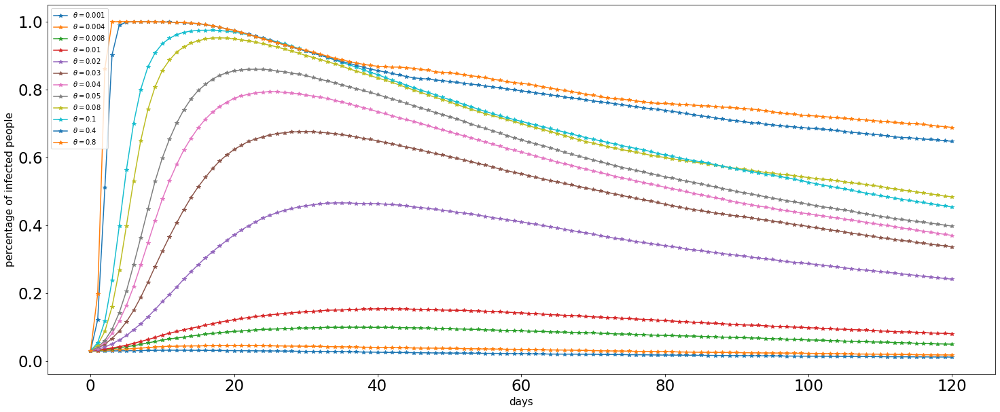
描述：$\theta$ 越大，爆发的速度越快，对疫情传播的影响越大
# show nx draw
# plot nodes on plt based on networkx
DAY = 10
#subplots(行，列) figsize=(宽，高)
fig, axes = plt.subplots(2, 6, figsize=(25, 10))
for i, t in enumerate(THETAs):
states = run_theta_day_state[:, i, DAY-1, :].mean(axis=0)
plt.subplot(2, 6, i+1)
#spring_layout： 用Fruchterman-Reingold算法排列节点（这个算法我不了解，样子类似多中心放射状）
nx.draw(G,node_size=5, node_color=states, width=0.3, pos=nx.spring_layout(G,iterations=50), cmap=plt.cm.OrRd)
plt.title(r'$\theta=$' + str(t))
plt.show()C:\Users\43790\Anaconda3\lib\site-packages\networkx\drawing\nx_pylab.py:579: MatplotlibDeprecationWarning:
The iterable function was deprecated in Matplotlib 3.1 and will be removed in 3.3. Use np.iterable instead.
if not cb.iterable(width):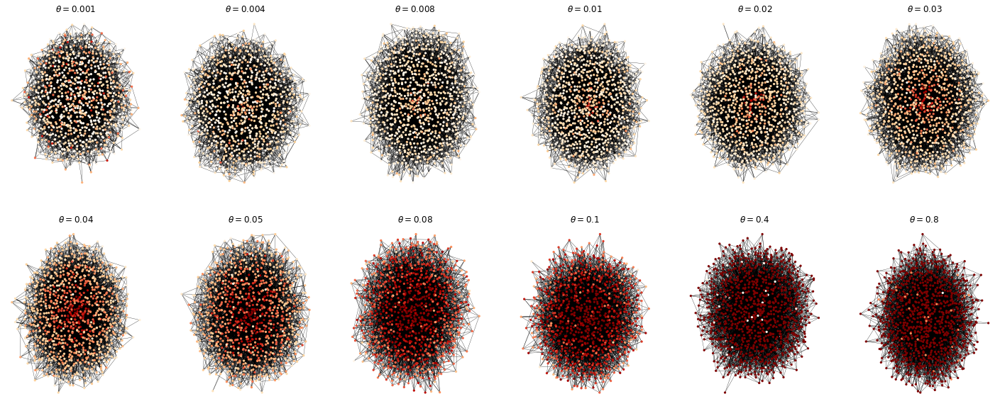
上图结点越深，说明该结点患病概率越高。
可以看出，当 $\theta$ 值不大于 0.03 时，疫情传播并不严重，当 $\theta$ 值大于0.03时，疫情传播速度将以指数级迅速在网络中蔓延
Part2：探究网络结构（节点密度、链接概率）对传播速度的影响效果
关键参数 $M_0$ 网络结构参数（值越大，结构越紧密）
# observe
Ms = [1, 2, 4, 6, 8,10]
fig, axes = plt.subplots(2, 6, figsize=(24, 9))
for i, M in enumerate(Ms):
fam_list, G = return_family_list(m=M)
plt.subplot(2, 6, i+1)
nx.draw(G, node_size=5, node_color='#5C3317', edge_color='#00FF00', width=0.3, pos=nx.spring_layout(G, iterations=50))
plt.title(r'$M_0=$' + str(M) + '\n' + 'average_path_length: ' + str(round(nx.average_shortest_path_length(G), 3)))
plt.subplot(2, 6, i+7)
d = nx.degree_histogram(G)
x = range(len(d))
y = [z / float(sum(d)) for z in d]
plt.loglog(x, y, 'b*')
plt.show()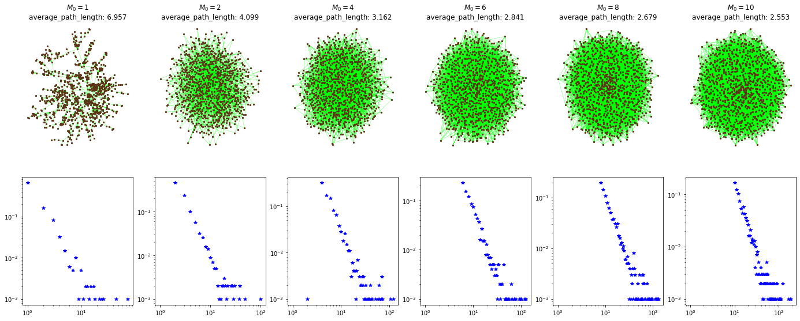
如图所示：
- 当参数 $M_0$ (Number of edges to attach from a new node to existing nodes) 增大时（社会组织结构更紧密），两点间平均距离average_path_length也变小。
- 度都是呈幂律分布(符合人类社会的真实规律)
# experiment
from calculator import *
# @return: illed people [runs:[M_0:[day:[state]]]]
# /= runs for average
def experiment_2_M0(Ms=[1, 2, 4, 6, 8, 10], INFECT_INIT=30, days=15, runs=30, theta=0.1):
states_each_experiment = np.zeros((runs, len(Ms), days, 1000))
paras.THETA = theta
for m, M in enumerate(Ms):
fam_list, G = return_family_list(n=1000, m=M)
cal = Calculator(fam_list)
for r in trange(runs):
cal.cls()
infects = []
while len(infects) < INFECT_INIT:
i = np.random.randint(0, len(fam_list))
infects.append(i)
for i in infects:
fam_list[i].state = 5
# cal.next_iter(days) returns [day:[state, state, state]]
each_experiment = np.array(cal.next_iter(days))
states_each_experiment[r, m] = each_experiment
return states_each_experiment# experiment 2
ex_2_data = experiment_2_M0()100%|██████████████████████████████████████████████████████████████████████████████████| 30/30 [00:01<00:00, 26.78it/s]
100%|██████████████████████████████████████████████████████████████████████████████████| 30/30 [00:02<00:00, 13.67it/s]
100%|██████████████████████████████████████████████████████████████████████████████████| 30/30 [00:03<00:00, 8.64it/s]
100%|██████████████████████████████████████████████████████████████████████████████████| 30/30 [00:03<00:00, 8.20it/s]
100%|██████████████████████████████████████████████████████████████████████████████████| 30/30 [00:04<00:00, 7.00it/s]
100%|██████████████████████████████████████████████████████████████████████████████████| 30/30 [00:04<00:00, 7.07it/s]# data
run_M0_day_state = np.where(ex_2_data==0, 0, 1)# show results
Ms=[1, 2, 4, 6, 8, 10]
M0_day = run_M0_day_state.mean(axis=0).mean(axis=2)
fig, axes = plt.subplots(2, 6, figsize=(25, 10))
for i, M in enumerate(Ms):
fam_list, G = return_family_list(m=M)
plt.subplot(2, 6, i+1)
states = run_M0_day_state[:, i, 14, :].mean(axis=0)
nx.draw(G, node_size=5, node_color=states, width=0.3, pos=nx.spring_layout(G, iterations=50), cmap=plt.cm.OrRd)
plt.title(r'$M_0=$' + str(M) + '\n' + 'day-15 infected possibiliy')
plt.subplot(2, 6, i+7)
plt.plot(np.arange(1, 16), M0_day[i], '*-')
plt.ylim(0, 1.05)
plt.title('infected people in 15 days')
plt.show()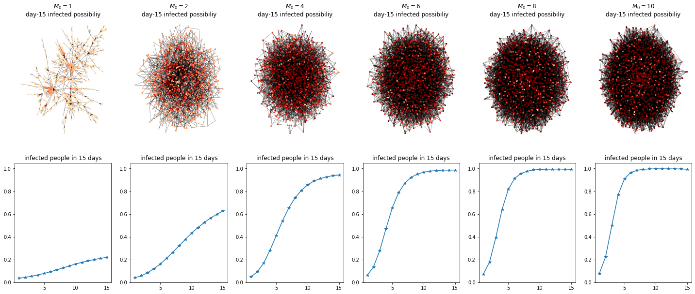
描述：社会结构变得紧密时，传播速度也会增加，个体患病概率也会增加。
Part3：探究调节网络结构参数对疫情传播的影响效果
# observe
fam_list, G = return_family_list()
fig, axes = plt.subplots(1, 6, figsize=(30, 5))
for i in range(7):
node_size = 5
node_color = [0]*len(fam_list)
nodelist = G.nodes()
plt.subplot(1, 7, i+1)
nx.draw(G, node_size=0, width=0, pos=nx.spring_layout(G, iterations=50), alpha=1)
if i==0:
plt.title("degrees")
node_size = [d[1] for d in list(G.degree())]
node_color = [(d-min(node_size))/(max(node_size)-min(node_size)) for d in node_size]
if i==1:
plt.title(r"degrees:" + "30‰")
nodelist = [d[0] for d in list(G.degree()) if d[1] >= 5]
node_size = [G.degree(i) for i in nodelist]
node_color = [(d-min(node_size))/(max(node_size)-min(node_size)) for d in node_size]
if i==2:
plt.title(r"degree:" + "25‰")
nodelist = [d[0] for d in list(G.degree()) if d[1] >= 15]
node_size = [G.degree(i) for i in nodelist]
node_color = [(d-min(node_size))/(max(node_size)-min(node_size)) for d in node_size]
if i==3:
plt.title(r"degrees:" + "20‰")
nodelist = [d[0] for d in list(G.degree()) if d[1] >= 20]
node_size = [G.degree(i) for i in nodelist]
node_color = [(d-min(node_size))/(max(node_size)-min(node_size)) for d in node_size]
if i==4:
plt.title(r"degrees:" + "15‰")
nodelist = [d[0] for d in list(G.degree()) if d[1] >= 25]
node_size = [G.degree(i) for i in nodelist]
node_color = [(d-min(node_size))/(max(node_size)-min(node_size)) for d in node_size]
if i==5:
plt.title(r"degrees:" + "10‰")
nodelist = [d[0] for d in list(G.degree()) if d[1] >= 30]
node_size = [G.degree(i) for i in nodelist]
node_color = [(d-min(node_size))/(max(node_size)-min(node_size)) for d in node_size]
if i==6:
plt.title(r"degrees:" + "5‰")
nodelist = [d[0] for d in list(G.degree()) if d[1] >= 30]
node_size = [G.degree(i) for i in nodelist]
node_color = [(d-min(node_size))/(max(node_size)-min(node_size)) for d in node_size]
nx.draw(G, node_size=node_size, node_color=node_color, nodelist=nodelist, width=0.3, pos=nx.spring_layout(G, iterations=50), cmap=plt.cm.Blues_r)
plt.show()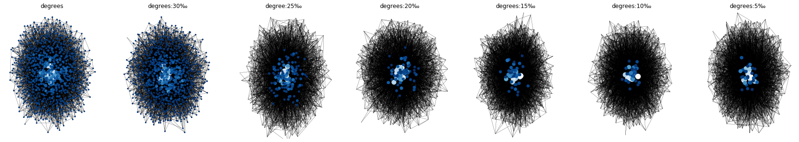
着色节点代表网络中的密集活动者，即起传播作用的关键节点
# experiment
from calculator import *
# @return: illed people [runs:[D:[day:[state]]]]
# /= runs for average
def experiment_3_hubs(Ds=[9999, 30, 25, 20, 15, 10, 5], INFECT_INIT=30, days=15, runs=30, theta=0.1):
states_each_experiment = np.zeros((runs, len(Ds), days, 1000))
paras.THETA = theta
for d, D in enumerate(Ds):
fam_list, G = return_family_list(n=1000)
cal = Calculator(fam_list)
for r in trange(runs):
cal.cls()
infects = []
while len(infects) < INFECT_INIT:
i = np.random.randint(0, len(fam_list))
infects.append(i)
for i in infects:
fam_list[i].state = 5
# control hubs
for fam in fam_list:
fam.seal = False
nodelist = [degree[0] for degree in list(G.degree()) if degree[1] >= D]
for fam in fam_list:
if fam.label in nodelist:
fam.seal = True
# cal.next_iter(days) returns [day:[state, state, state]]
each_experiment = np.array(cal.next_iter(days))
states_each_experiment[r, d] = each_experiment
return states_each_experiment# experiment 3
ex_3_data = experiment_3_hubs()100%|██████████████████████████████████████████████████████████████████████████████████| 30/30 [00:03<00:00, 8.83it/s]
100%|██████████████████████████████████████████████████████████████████████████████████| 30/30 [00:03<00:00, 9.80it/s]
100%|██████████████████████████████████████████████████████████████████████████████████| 30/30 [00:03<00:00, 9.16it/s]
100%|██████████████████████████████████████████████████████████████████████████████████| 30/30 [00:02<00:00, 11.52it/s]
100%|██████████████████████████████████████████████████████████████████████████████████| 30/30 [00:02<00:00, 12.85it/s]
100%|██████████████████████████████████████████████████████████████████████████████████| 30/30 [00:01<00:00, 20.45it/s]
100%|██████████████████████████████████████████████████████████████████████████████████| 30/30 [00:01<00:00, 24.01it/s]# data
run_D_day_state = np.where(ex_3_data==0, 0, 1)# show results
Ds= [9999, 30, 25, 20, 15, 10, 5]
fam_list, G = return_family_list(n=1000)
D_day = run_D_day_state.mean(axis=0).mean(axis=2)
fig, axes = plt.subplots(2, 7, figsize=(25, 10))
for i, D in enumerate(Ds):
plt.subplot(2, 7, i+1)
states = run_D_day_state[:, i, 14, :].mean(axis=0)
nx.draw(G, node_size=5, node_color=states, width=0.3, pos=nx.spring_layout(G, iterations=50), cmap=plt.cm.OrRd)
if i==0:
plt.title('no hubs to control')
else:
plt.title(r'control degree:' + str(D) + '‰')
plt.subplot(2, 7, i+8)
plt.plot(np.arange(1, 16), D_day[i], '*-')
plt.ylim(0, 1)
plt.title('infected people in 15 days')
plt.show()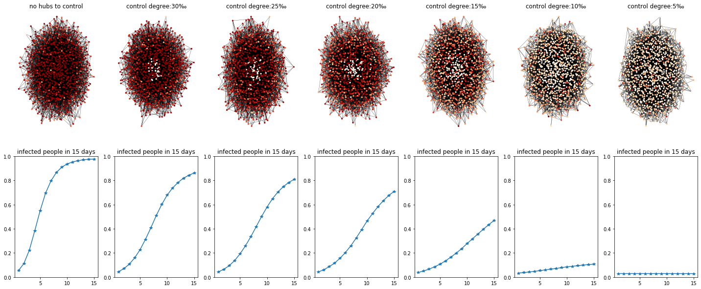
描述：如图所示，随着管控程度的不断提高，疫情在网络中的传播速度下降明显，即在现实世界中，控制人口的流动将有利于控制疫情传播
Part4：判断解控时机
# experiment
from calculator import *
# @return: illed people [day:[state]]
def experiment_4_guard(INFECT_INIT=30, flag=0):
fam_list, G = return_family_list()
cal = Calculator(fam_list)
states_each_experiment = list()
def append_experiment(experiment):
for states in experiment:
states_each_experiment.append(states)
day = 0
while day < 50:
if day == 0:
infects = []
while len(infects) < INFECT_INIT:
i = np.random.randint(0, len(fam_list))
infects.append(i)
for i in infects:
fam_list[i].state = 5
paras.THETA = 0.05
if day >= 7 and day <= 10:
paras.THETA *= 0.5
paras.ETA = min(1, paras.ETA * 1.5)
if day > 18 and flag==0:
paras.THETA = 0.05
if day > 24 and flag==1:
paras.THETA = 0.05
each_experiment = np.array(cal.next_iter(1))
append_experiment(each_experiment)
day += 1
return np.asarray(states_each_experiment)ex_4_data = experiment_4_guard()S_number_list = np.where(ex_4_data==0, 1, 0).sum(axis=1) / 1000
E_number_list = np.where(ex_4_data>0, 1, 0).sum(axis=1) / 1000
I_number_list = np.where(ex_4_data==-1, 1, 0).sum(axis=1) / 1000
R_number_list = np.where(ex_4_data==-2, 1, 0).sum(axis=1) / 1000Days = [1, 2, 3, 8, 10, 15, 20, 30, 40, 50]
fig, axes = plt.subplots(3, 5, figsize=(25, 10))
for i, D in enumerate(Days):
plt.subplot(3, 5, i+1)
ex_4_data_tmp = np.where(ex_4_data==0, 0, 1)
states = ex_4_data_tmp[D-1, :]
nx.draw(G, node_size=5, node_color=states, width=0.3, pos=nx.spring_layout(G, iterations=50), cmap=plt.cm.OrRd)
plt.title('day' + str(D))
plt.subplot(3, 1, 3)
plt.plot(S_number_list, '*-')
plt.plot(E_number_list, '*-')
plt.plot(I_number_list, '*-')
plt.plot(R_number_list, '*-')
plt.title('infected data')
plt.legend(['S', 'E', 'I', 'R'])
plt.show()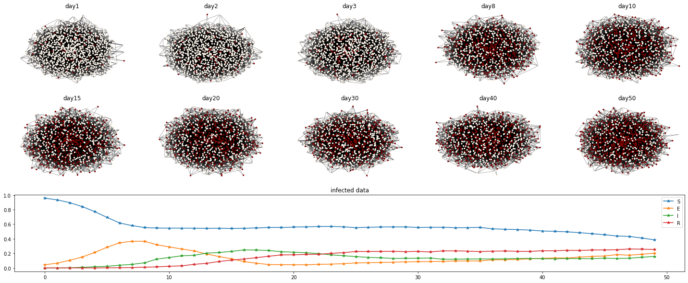
fig, axes = plt.subplots(figsize=(25, 10))
plt.tick_params(labelsize=23)
plt.plot(S_number_list, '*-')
plt.plot(E_number_list, '*-')
plt.plot(I_number_list, '*-')
plt.plot(R_number_list, '*-')
plt.title('control 7 days, 19 days to relax',y = 1.1,fontsize =25)
plt.legend(['S', 'E', 'I', 'R'])
plt.show()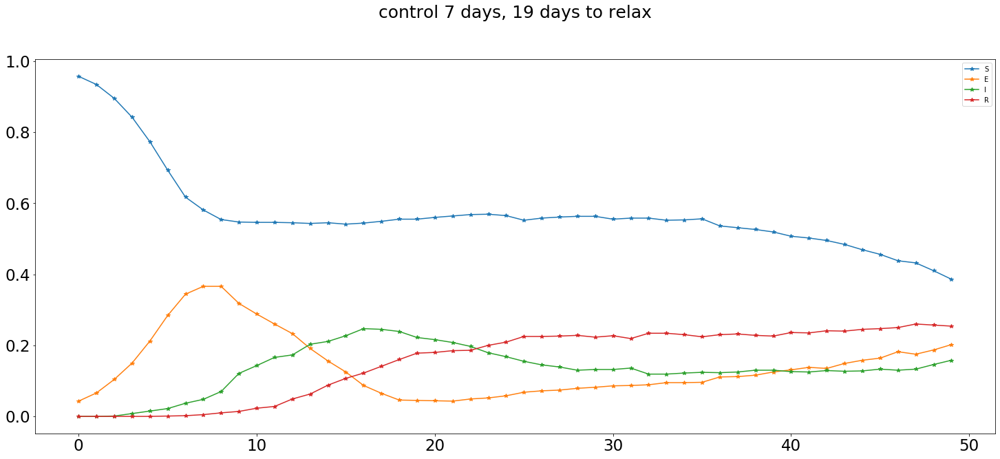
ex_4_data = experiment_4_guard(flag=1)
S_number_list = np.where(ex_4_data==0, 1, 0).sum(axis=1) / 1000
E_number_list = np.where(ex_4_data>0, 1, 0).sum(axis=1) / 1000
I_number_list = np.where(ex_4_data==-1, 1, 0).sum(axis=1) / 1000
R_number_list = np.where(ex_4_data==-2, 1, 0).sum(axis=1) / 1000
fig, axes = plt.subplots(figsize=(25, 10))
plt.tick_params(labelsize=23)
plt.plot(S_number_list, '*-')
plt.plot(E_number_list, '*-')
plt.plot(I_number_list, '*-')
plt.plot(R_number_list, '*-')
plt.title('control 7 days, 25 days to relax',y = 1.1,fontsize =25)
plt.legend(['S', 'E', 'I', 'R'])
plt.show()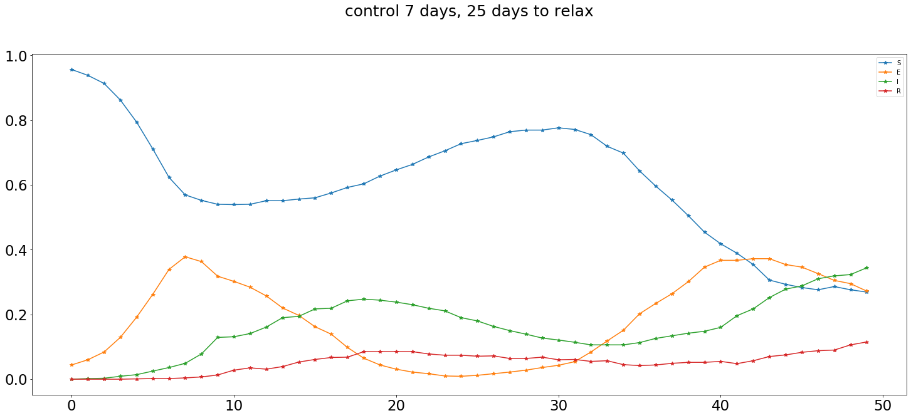
ex_4_data = experiment_4_guard(flag=2)
S_number_list = np.where(ex_4_data==0, 1, 0).sum(axis=1) / 1000
E_number_list = np.where(ex_4_data>0, 1, 0).sum(axis=1) / 1000
I_number_list = np.where(ex_4_data==-1, 1, 0).sum(axis=1) / 1000
R_number_list = np.where(ex_4_data==-2, 1, 0).sum(axis=1) / 1000
fig, axes = plt.subplots(figsize=(25, 10))
plt.tick_params(labelsize=23)
plt.plot(S_number_list, '*-')
plt.plot(E_number_list, '*-')
plt.plot(I_number_list, '*-')
plt.plot(R_number_list, '*-')
plt.title('control 7 days, 50 days to relax',y = 1.1,fontsize =25)
plt.legend(['S', 'E', 'I', 'R'])
plt.show()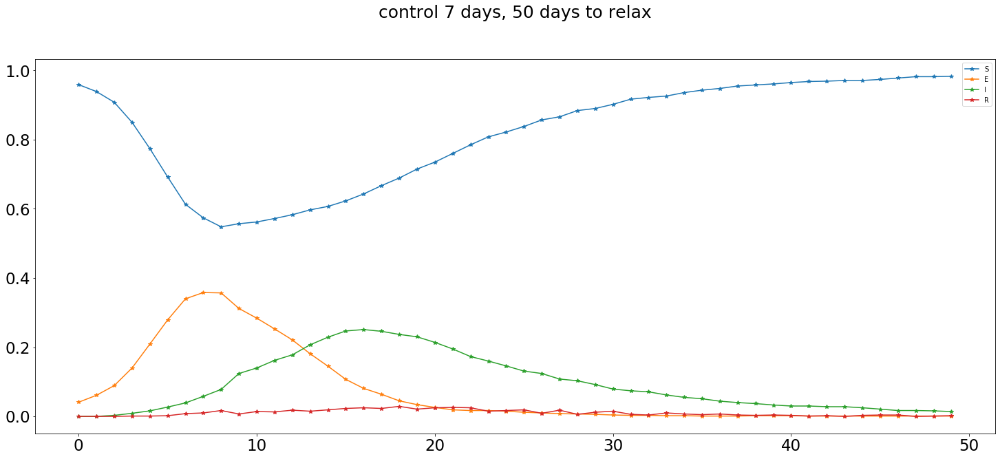